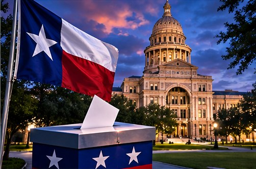

TEXAS NEWS STUDIO / NEWS
TEXAS POLITICS · NOVEMBER 7, 2026
TEXAS ELECTION AFTERSHOCK

TNS EDITORIAL NOTE: This is an original news brief and analysis of publicly discussed developments, not a claim of firsthand reporting. The image is a conceptual illustration, not documentary photography.
Texas election results are prompting new debate over the state’s political direction and legislative priorities.
Why this matters
An election does not end when the votes are counted. The next question is what elected officials will actually do with the authority voters have given them. In Texas, that means watching decisions about property taxes, public schools, infrastructure, energy, and the cost of living. A dramatic headline may capture election night, but the real consequences often arrive months later in a budget or a legislative vote.
What to watch
Watch the actual certified results, the margins in competitive districts, committee assignments, and proposals filed for the next legislative session. A narrow victory can change the political conversation without necessarily changing the law. It is also worth distinguishing a campaign promise from a bill that has passed both chambers and been signed.
The Texas angle
Texas is growing, and growth makes political choices unusually tangible. Residents want reliable electricity, roads that can handle traffic, affordable housing, and schools that can serve their communities. Whatever their party, officeholders will eventually have to explain how their priorities affect those everyday concerns.
Tex's Take | TNS Commentary
My view: the most useful thing a news outlet can do is separate what is known from what is merely being predicted. Big headlines are easy. Following the documents, the numbers, and the consequences for ordinary people takes more work. And if every prediction of disaster came true, we'd all need a second calendar just to schedule the emergencies. We'll keep watching the facts, and we'll update the story when the evidence changes.